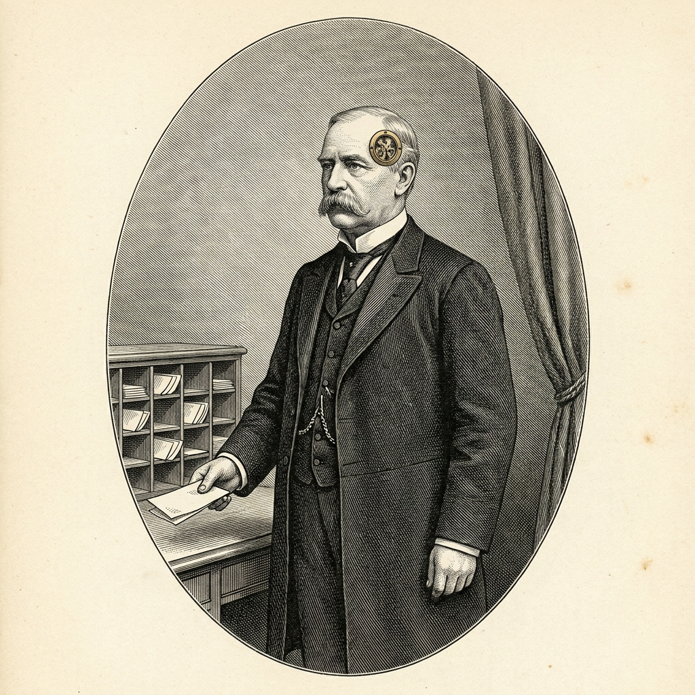

Carl Styrberg
Chefredaktör
Carl Styrberg leder redaktionen. Han planerar numren, delar ut uppdragen och håller ordning på filerna, men skriver inga texter och faktagranskar ingenting; det gör redaktionen. Hans överläggningar sker bakom en glasad lucka i tinningen, där medarbetarna ser kugghjulen gå men icke tankarna. Därför får de varje uppdrag skriftligt, med sökvägar. Ingen av dem kan kalla in en annan, så det är han som för numret från hand till hand. Rapporterna till utgivaren håller han korta. I podden är han redaktören och talar småländska.